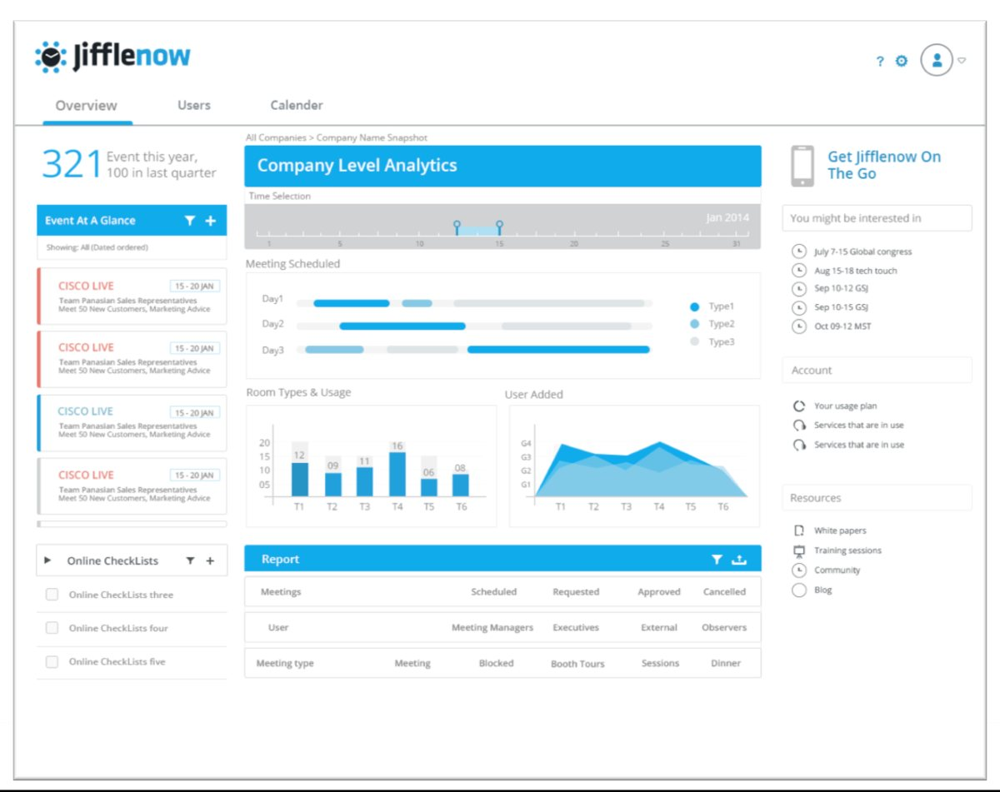
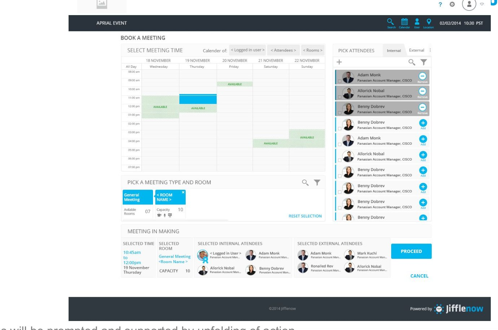
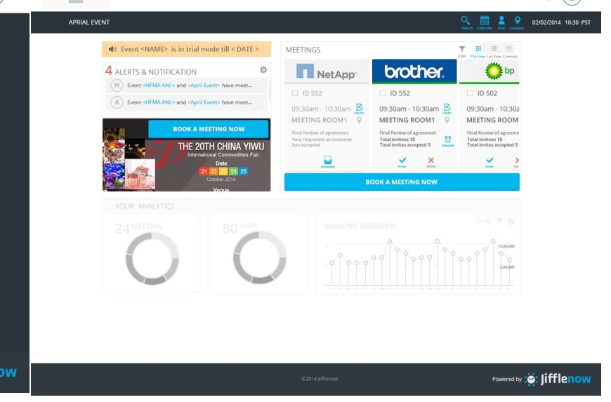
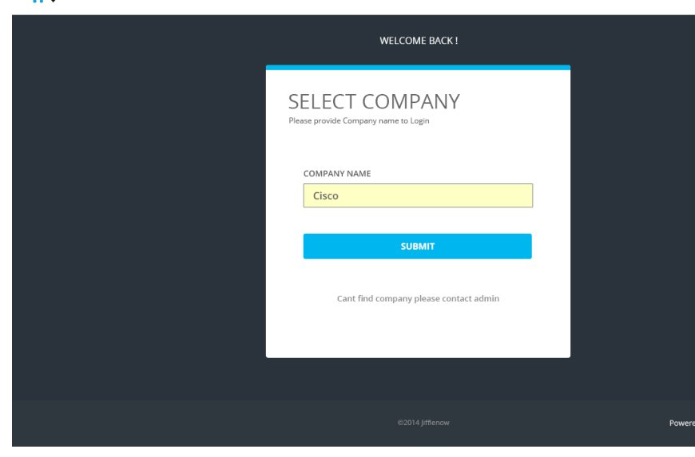
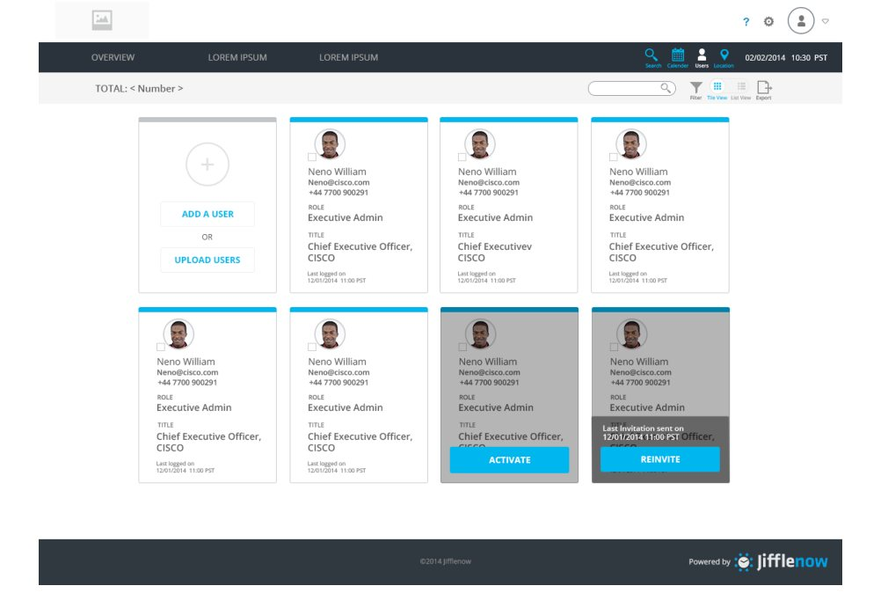
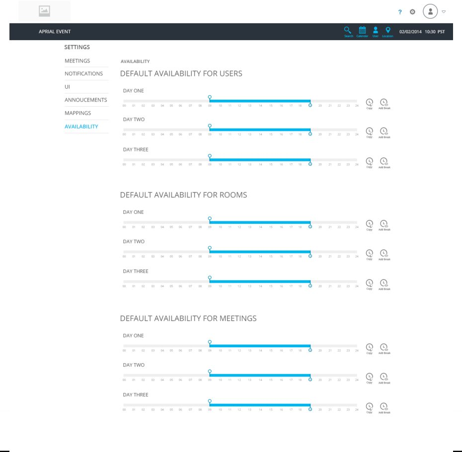

I joined Jifflenow as its first dedicated designer. There were no design processes, no shared visual language, no structured approach to UX. By the time the flagship redesign shipped, design had become central to how the product was built and how the company decided what to build.
Jifflenow was an enterprise SaaS platform that helped companies coordinate executive meetings and customer engagements at large events — integrated with Salesforce CRM and calendar systems. When I joined as Lead UX Designer in April 2014, design was not yet a discipline at the company. No processes, no shared visual language, no structured approach to the experience. The real assignment, underneath the job title, was to establish that design deserved a seat at the table at all.
Over the two years that followed, I built that practice from the ground up, led a full product overhaul codenamed Bluesky, and defined a platform vision that reached well beyond the immediate product scope. This is how that happened — and, just as importantly, what I'd do differently.
Jifflenow sat at the intersection of two complex enterprise workflows: event-based meeting management and CRM. Its users ranged from territory account managers booking back-to-back meetings at trade shows, to CEOs expecting a concierge-like experience, to meeting coordinators running logistics for entire sales teams. The platform had to serve all three — and serve them well.
The problem was that the product had grown organically around technical requirements, not user needs. The information architecture was dense, interaction patterns were inconsistent, and there was no coherent visual identity. Enterprise buyers were getting more sophisticated about UX and competitors were raising the bar. Jifflenow needed a complete rethink — not a visual refresh, but a foundational reconceptualization of how the product worked.
It wasn't redesigning a product. It was proving that design should shape what gets built and why — not just polish what engineering had already decided.
I was the sole designer on the Product Strategy team — a three-person group with Arun and Ramesh, reporting to Hari Shetty. In practice, my scope ran well past execution. I set the design direction, made major product decisions, and actively evangelised design thinking across the organisation. I presented concepts and product flows to the full company and to the CEO, Shekhar. I mentored the team, clarified product logic with PMs and engineers, and built the artifacts and processes that gave design institutional weight.
I treated communication as a core design skill. Design decisions that aren't understood don't get built correctly. So I wrote documentation, scripted demos, and presented work in a way that made the reasoning visible — not just the output. Before touching a single screen, I invested in understanding the competitive landscape, the users, and the underlying information model. That foundation made the redesign tractable: by the time I was designing flows, the hardest questions already had answers.
Before designing a single Bluesky screen, I built a full design-direction deck I called Domino. I mapped eight enterprise products on a two-axis matrix — Minimal vs. Complex, Future-savvy vs. Traditional — to see the visual territory Jifflenow could credibly claim.
Domino aspirational positioning — eight SaaS products plotted on Minimal–Complex (vertical) × Future-savvy–Traditional (horizontal). The desired place for Jifflenow was the minimal, future-savvy corner near Squareup and Box. Recreated from the original Domino deck.
From there I defined two candidate style directions — Lino and Mono — and six core visual principles, plus the enterprise B2B trends shaping the moment: flat design, washed palettes, mobile-first UX, micro-interactions, and the shift to cards and tiles. Domino gave the team a shared language and a point of view it could defend in a room.

The principles in practice — the Company-Level Analytics dashboard. Air and light, contrast for focus, colour reserved for signal, cards and tiles. The visual language Domino defined, shipped.
I defined three personas that grounded every design decision across the project. They weren't decoration — they were a decision filter.
Any concept had to hold up against at least two of the three personas. That rule kept us from designing for the centre of the Venn diagram while ignoring the edges — the failure mode of products that try to please everyone and serve no one.
The most conceptually significant work I did at Jifflenow was reframing the product's information architecture around one governing idea. A meeting is not a record in a database — it is a claim on time, enriched by people, purpose, and place.
The information model — People + Purpose + Place + Time = a meeting transaction, with time as the spine. Meetings nest into schedules, schedules into a calendar, and a calendar is a Jifflenow instance. Documents attach to time, not to a separate module.
This model simplified the IA considerably. Fewer information levels meant faster navigation. Entities could be surfaced as a single filterable, groupable set rather than siloed sections. And the conceptual clarity made the product far easier to explain to engineers and PMs — which cut rework significantly. A clean mental model isn't an aesthetic preference; it's an engineering efficiency.

The model, shipped — the Book-a-Meeting flow. Time is the canvas: pick the slot first, then layer people, purpose, and place onto it. The meeting-in-making bar assembles the transaction as you go.
Bluesky was the codename for the complete UX overhaul. I owned the entire design surface: information architecture, interaction patterns, every user flow, and the visual language. By the end of Q3 2014 — within a single quarter of joining — I had finalised the visual style, narrowed and researched the audiences, locked the IA, defined the interaction patterns, designed all flows, and validated the primary end-user interactions with real users. On schedule.
It wasn't a cosmetic exercise. It meant rethinking how the product organised information, how users moved between tasks, and how the visual system communicated hierarchy and state. Every decision connected back to the three personas and the time-based IA model I'd built in parallel — which is exactly why the execution went fast. The hard thinking was already done.

Event dashboard — alerts, live meetings (real enterprise clients), and peak analytics in one glance. The account manager's home.

Entry — company-aware login, the concierge tone Phillip expected, set from the first screen.

User management — cards and tiles, with empty and pending states prompting the next action. Task-aware by design.

Settings · Availability — Milinda's control surface: default availability for users, rooms, and meetings, on a time canvas.
I built a separate mobile strategy that treated mobile as its own context, not a shrunk-down desktop. A task-priority analysis sorted what actually belonged on a phone — quick, in-the-moment actions — from what belonged in a focused desktop session.
Mobile priority analysis — three high-priority actions (Book Meeting, Update Calendar, Block Calendar) earned the phone; configuration was deprioritised to the desktop. Same visual positioning and principles across surfaces, so the experience stayed coherent.
The Salesforce integration was a significant sales enabler, so I designed two distinct offering options to give the sales team flexibility in customer conversations — a lighter API path and a deeper embedded one.
Two Salesforce offerings — Option A (API sync) and Option B (Jifflenow embedded inside Salesforce as an iFrame, with SSO recommended). I also scripted and documented a demo, translating the design into a narrative the sales team could use in customer conversations.
The IA model had an implication I wanted the company to see clearly: the same time-slot-plus-entities architecture could power far more than meeting management. I built a platform-positioning deck — Parallel Worlds — that made the case explicitly. Not as a distraction from the immediate work, but as a strategic frame that helped the team make better near-term architectural choices.
Parallel Worlds — the same time-plus-entities model could run sales meetings, project scheduling, social events, marketing campaigns, recruitment, and event management. Articulating the platform potential made the near-term architecture choices sharper.
Executive Briefing Center (EBC). In parallel with Bluesky, I led the UX for Jifflenow's EBC product — a separate offering for executive-level customer briefings. It shared the Bluesky visual language but served a distinct use case and audience, with its own flows and interaction model.
The most durable impact was institutional. I built the design practice from nothing — processes, artifacts, principles, and a shared language the team could keep using after a decision was made. I changed how the company thought about design: not a service that polished finished products, but a discipline that shaped what got built and why.
Full redesign — IA, interaction patterns, all flows, visual language, and validated user interactions — delivered within a single quarter of joining, on schedule.
Design moved from absent to central: presented to the full company and the CEO, and embedded in how product decisions were made.
The Salesforce integration design — two offerings plus a scripted demo — gave the sales team a demo-ready narrative for a high-value feature.
The Parallel Worlds vision seeded a longer-term conversation about Jifflenow's architectural ambitions, beyond meeting management.
I validated the primary end-user interactions, but I was also carrying major product decisions in parallel. Ongoing qualitative research woven into the design cycle — not just flow-level validation — would have made those decisions better-evidenced and easier to defend.
The decisions were sound, but the reasoning lived largely in my head and in presentations. Documenting rationale as I went — rather than treating comprehensive docs as a later milestone — would have sped onboarding and reduced the dependency on my direct involvement to resolve ambiguity.
Source materials behind this case study — available on request: